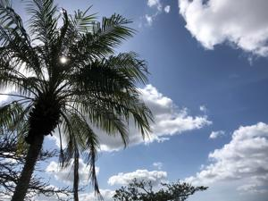
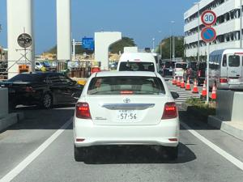

うるがいの話 ある日
最新: 受取館が中央図書館に【うるがいの話 ある日】とは 一日だけのプログです
『うるがいの話』の最新一日だけのプログで、通信料が少なく経済的だ。カニの画像をクリックすると全ての日付が載る『うるがいの話』サイトを表示します
|
|
【うるがいの話】 うるがい(ｳﾙｶﾞｲ urugai)とは、『もずくがに』の名前でとても大きくなります。 |
|---|---|
|
|
【カミマヤーの話】 猫のことを方言でマヤーといいます。カミマヤー（kamimayaa）とは、神の猫のことです。 |
|
【たながぁの音楽】 たながぁ（ﾀﾅｶﾞｰ tanagaa）とは手長えびのことで、何種類かあり大きいのは車 エビぐらいになります。 |

|
【ぶながぁの話】 ぶながぁ(ﾌﾞﾅｶﾞｰ bunagaa)とは、赤い髪の毛、赤い身体、そして身長は１ｍ２０ｃｍ ぐらい、川の蟹を食べているの目撃された。場所は沖縄県国頭郡大宜味村のと ある村僕の隣近所に住んでいる爺さんから、聞いた話です。 |
|
|
【ギーマの話】 ギーマ(giima)とは、山原の里山に咲くスズランに似た、 花を付けます。実は食べられます、 気が付くと口の周りが紫になっています。 |
2023年02月19日 (日）受取館が中央図書館に
17:18
 
予約の貸出準備が整いましたとメールが来た。ところがである受取館が、いつ
もの近所の図書館でなく、与儀の中央図書館だった！。チョンボ、なぜそうな
ったのか、新たに予約をしてみた。システムが新しくなったため、初期に受取
館が中央図書館に設定され、それを変更せずに予約をしたためである。段々雑
になっている。中央図書館に近い、金秀スーパーで飴を買うためエライ混雑し
ているレジに並ぶと、『割り込んでいますよ！』と怒られた、おお、と別の列
に並ぶとまた、『割り込んでいますよ！』と怒られた。ええ？、列で距離をと
っているため気付かなかった。３度目は慎重に、別の列に並び順を守り無事買
い物を済ます。しかし、なんという込み具合だろう。込み具合といえば、先週
コドモが内地に行った、送迎をしたが空港はとてもとても、混んでいた。コド
モの話だと、飛行機に乗る人も混んでいたと。
１７時１４分 ビットコインの総資産 ￥９、５６２（↑９）